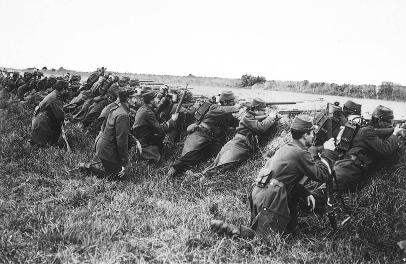

Что означает слово "Рейх"?
Опубликовано: 29 октября 2024
Мы привыкли воспринимать слово "Reich" как обозначающее Третий рейх, преступный режим...
Мы привыкли воспринимать слово "Reich" как обозначающее Третий рейх, преступный режим...
Почему Венгрия и Румыния враждуют до сих пор?
Опубликовано: 28 октября 2024
Венгры и румыны исторически имеют давнее противостояние несмотря на то, что и Венгрия...
Венгры и румыны исторически имеют давнее противостояние несмотря на то, что и Венгрия...

Битва при Седане 1 сентября 1870 года
Опубликовано: 9 сентября 2024
1 сентября является знаковым днем для человечества. Нет - не только потому, что он...
1 сентября является знаковым днем для человечества. Нет - не только потому, что он...
Россия и Габсбурги - «заклятые друзья»
Опубликовано: 7 августа 2024
Россия и Германия имеют давнюю и сложную историю отношений. Две мировые войны...
Россия и Германия имеют давнюю и сложную историю отношений. Две мировые войны...
Леопольд I - спаситель империи
Габсбургов
Габсбургов
Опубликовано: 30 июля 2024
В 1648 году Габсбурги подписали Вестфальский мир, по которому признали суверенитет Швейцарии...
В 1648 году Габсбурги подписали Вестфальский мир, по которому признали суверенитет Швейцарии...
Геополитика Вильгельма II
Опубликовано: 5 июня 2024
1888 год вошёл в историю Германии как "год трех императоров". Кончина основателя империи...
1888 год вошёл в историю Германии как "год трех императоров". Кончина основателя империи...
Национальная Народная армия ГДР
Опубликовано: 1 июня 2024
После разгрома Германии в 1945 году на ее территории были созданы оккупационные зоны...
После разгрома Германии в 1945 году на ее территории были созданы оккупационные зоны...
Как Германия навязала России Брестский мир?
Опубликовано: 30 мая 2024
Первыми большевистскими постановлениями после свержения Временного правительства...
Первыми большевистскими постановлениями после свержения Временного правительства...

Союз России и Пруссии в XIX веке
Опубликовано: 28 мая 2024
В XVIII веке отношения России и Пруссии имели противоречивый характер...
В XVIII веке отношения России и Пруссии имели противоречивый характер...
Почему распался союз России и Германии?
Опубликовано: 28 мая 2024
После взятия Парижа германскими войсками в ходе франко-прусской войны Россия стала...
После взятия Парижа германскими войсками в ходе франко-прусской войны Россия стала...
Проблемы создания вермахта
Опубликовано: 16 ноября 2023
Указом Гитлера от 16 марта 1935 года рейхсвер был преобразован в вермахт, а контрактная служба...
Указом Гитлера от 16 марта 1935 года рейхсвер был преобразован в вермахт, а контрактная служба...

Почему пала Веймарская республика?
Опубликовано: 4 сентября 2023
На протяжении всей своей недолгой истории – чуть более 15 лет – Веймарская республика...
На протяжении всей своей недолгой истории – чуть более 15 лет – Веймарская республика...
Почему Германия проиграла на Западном фронте?
Опубликовано: 17 октября 2023
Летом 1944 года, накануне высадки союзников, между командующими Западным фронтом...
Летом 1944 года, накануне высадки союзников, между командующими Западным фронтом...

Мифы о плане Шлиффена
Опубликовано: 28 января 2023
План Шлиффена был составлен на момент 1905 года и предполагал войну на 1 фронт. 9 лет спустя...
План Шлиффена был составлен на момент 1905 года и предполагал войну на 1 фронт. 9 лет спустя...
Почему во Франции случались революции?
Опубликовано: 23 ноября 2022
Как известно, французы считаются одной из самых вольнолюбивых наций в Европе. Здесь тяжело...
Как известно, французы считаются одной из самых вольнолюбивых наций в Европе. Здесь тяжело...

Дания и Пруссия. История противостояния
Опубликовано: 2 августа 2022
Шлезвиг-Гольштейнский вопрос был одним из наиболее острых в североевропейской политике...
Шлезвиг-Гольштейнский вопрос был одним из наиболее острых в североевропейской политике...

Почему План Шлиффена провалился?
Опубликовано: 6 июля 2022
В 1870-1871 гг. прусские войска разгромили Францию, что позволило восстановить единую...
В 1870-1871 гг. прусские войска разгромили Францию, что позволило восстановить единую...
"Военные поучения" Мольтке
Опубликовано: 14 июня 2022
Объединение Германии в 1871 году было бы невозможно без активного участия прусской армии...
Объединение Германии в 1871 году было бы невозможно без активного участия прусской армии...